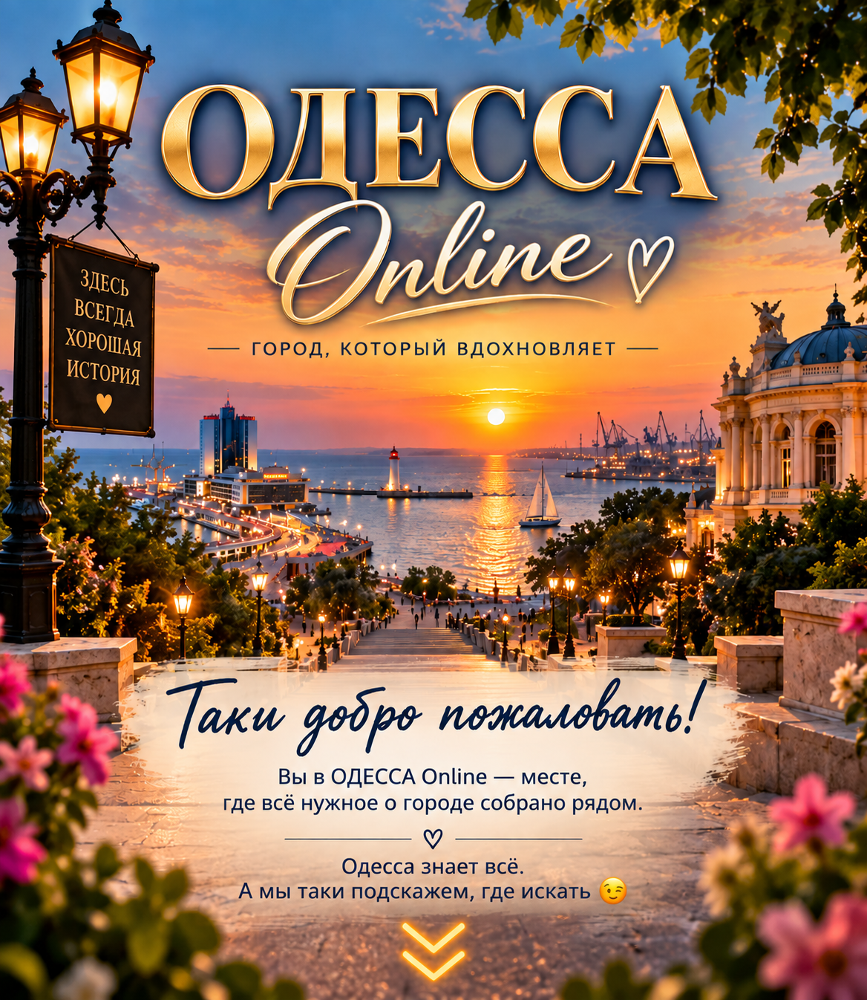

🚌 Транспорт
Маршрутки, трамваи, троллейбусы, вокзалы, такси
🏥 Медицина
Больницы, поликлиники, аптеки, врачи
🏫 Образование
Школы, сады, университеты, курсы
🛍 Покупки
Магазины, торговые центры, рынки и товары
🍽 Где поесть
Рестораны, кафе и доставка
💼 Работа
Вакансии, подработка и поиск работы
🏠 Недвижимость
Аренда, продажа и жильё
🎉 Отдых
Куда сходить, развлечения и отдых в Одессе
🚨 Важное
Экстренные службы, помощь и важная информация
← Назад
🚌 Транспорт
🚐 Маршрутки
🚋 Трамваи
🚎 Троллейбусы
🚇 Ж/Д вокзал
🚌 Автовокзалы
🚕 Такси
✈️ Авиаперелёты
← Все трамваи
🚋 Трамвай
Информация о маршруте
← Назад
🚎 Троллейбусы Одессы
← Все троллейбусы
🚎 Троллейбус
Информация о маршруте
← Назад
🚆 Ж/Д вокзал Одессы
📍 Адрес
Одесса, Привокзальная площадь, 2
🚉 Станция
Одесса-Главная
🎫 Купить билет
Официальный сервис Укрзалізниці
🕐 Расписание поездов
Отправление и прибытие поездов
⚠️ Актуальная информация о поездах
Проверить поезд и изменения перед поездкой
☎️ Справочная Укрзалізниці
0 800 503 111
044 465 33 44
🎟 Билеты и кассы
Покупка и оформление железнодорожных билетов
🧳 Багаж и ручная кладь
Правила перевозки багажа и ручной клади
🪑 Ожидание поезда
Информация об услугах вокзала для пассажиров
♿ Помощь пассажирам
Помощь при посадке, высадке и передвижении по вокзалу
🗺️ Как добраться
Открыть Ж/Д вокзал на карте и построить маршрут
🛡️ Безопасность
Во время воздушной тревоги следуйте указаниям работников вокзала и официальным сообщениям
ℹ️ Важно
Расписание, пути отправления и время движения поездов могут изменяться.
Перед поездкой проверяйте актуальную информацию.
← Назад
🚌 Автовокзалы Одессы
🚌
Центральный автовокзал
📍 ул. Колонтаевская, 58
Междугородние и международные автобусные рейсы
🚌
Автостанция «Привоз»
📍 Новощепной Ряд, 5
Пригородные и междугородние направления
🚌
Автостанция «Привокзальная»
📍 Район железнодорожного вокзала
Автобусные рейсы из Одессы
🚌
Автостанция «Старосенная»
📍 Старосенная площадь
Пригородные направления
🕐
Расписание автобусов — «Привоз»
Актуальные рейсы, время отправления, направления и цены
🎫
Купить билет — «Привоз»
Онлайн-покупка автобусных билетов
🕐
Расписание — «Привокзальная»
Онлайн-табло, маршруты, свободные места и билеты
📞
АС «Привокзальная» — контакты
(048) 704-44-22
(098) 322-44-22
📍 пл. Старосенная, 1-Б
🗺️
АС «Привокзальная» на карте
Открыть карту и построить маршрут
🗺️
Автовокзал «Привоз» на карте
Открыть карту и построить маршрут
🧳
Багаж
Правила и стоимость перевозки багажа могут отличаться в зависимости от перевозчика.
ℹ️
Важно
Расписание, место отправления и маршруты автобусов могут изменяться. Уточняйте информацию перед поездкой.
← Назад
🚕 Такси Одессы
🚕
Bolt
Заказ поездки через приложение Bolt
🚖
Такси BOND
Заказ такси в Одессе
☎️ 7-007-007
💡
Перед поездкой
Стоимость и время подачи автомобиля зависят от выбранной службы, времени и спроса.
📢
Хотите добавить своё такси?
Если вы представляете службу такси и хотите попасть в каталог
ОДЕССА Online, свяжитесь с администратором по вопросам рекламы и размещения.
💬 Связаться с администратором:
👉 @Diankaleksandrovna
⭐ Ваша служба такси может быть размещена в этом списке.
← Назад
✈️ Авиаперелёты
⚠️
Авиарейсы временно не выполняются
Воздушное пространство Украины закрыто для гражданской авиации.
🛡️
Причина
Ограничения связаны с войной и действуют в целях безопасности гражданской авиации.
🛫
Аэропорт Одессы
Регулярные пассажирские авиарейсы из Одессы временно не выполняются.
🌍
Ближайшие работающие аэропорты
Выберите аэропорт, чтобы посмотреть информацию и рейсы.
🇲🇩
Кишинёв — Молдова
✈️ Международный аэропорт Кишинёва
Нажмите, чтобы открыть сайт аэропорта
🇷🇴
Яссы — Румыния
✈️ Международный аэропорт Яссы
Нажмите, чтобы открыть сайт аэропорта
🇷🇴
Бухарест — Румыния
✈️ Международный аэропорт Анри Коандэ
Нажмите, чтобы открыть сайт аэропорта
⚠️
Перед поездкой
Проверяйте актуальный рейс, правила пересечения границы и необходимые документы перед поездкой.
← Назад
🚐 Маршрутки Одессы
← Все маршрутки
🚐 Маршрутка
Информация о маршруте
← Все маршрутки
🚐 Маршрутка №4
📍 Начальная:
ВТЦ на Среднефонтанской
🏁 Конечная:
6-й км Овидиопольской дороги
🔄 Направление:
ВТЦ на Среднефонтанской ↔ 6-й км Овидиопольской дороги
ℹ️ Информация:
Маршрут и график движения могут изменяться. Перед поездкой рекомендуется учитывать актуальную дорожную обстановку.
← Назад
🏥 Медицина
🏥 Больницы
🏨 Поликлиники
👶 Детские больницы
🧸 Детские поликлиники
🚑 Травмпункты
💊 Аптеки
🧪 Лаборатории / Анализы
🦷 Стоматологии
👁 Офтальмологи / Окулисты
👂 ЛОР-врачи
🌿 Аллергологи
🧴 Дерматологи
❤️ Кардиологи
🧠 Неврологи
👩 Гинекологи
👨 Урологи
🦴 Ортопеды / Травматологи
🩺 Терапевты / Семейные врачи
🧬 Эндокринологи
🍽 Гастроэнтерологи
🧠 Психологи / Психиатры
👶 Педиатры
🩻 УЗИ / Диагностика
← Назад
🏥 Больницы Одессы
🏥
Городская клиническая больница №1
📍 ул. Мясоедовская, 32
☎️ (048) 750-51-01
☎️ 0 800 33 23 01
Нажмите, чтобы открыть официальный сайт
🏥
Городская клиническая больница №10
📍 ул. Алексея Вадатурского, 61А
☎️ (048) 705-91-03
Нажмите, чтобы открыть на карте
🏥
Городская клиническая больница №11
📍 ул. Виталия Нестеренко, 5-Г
☎️ +38 (067) 732-00-11
Нажмите, чтобы открыть официальный сайт
🏥
Одесская областная клиническая больница
📍 ул. Академика Заболотного, 26/32
☎️ 0 800 500 101
Нажмите, чтобы открыть на карте
🦠
Городская инфекционная клиническая больница
📍 ул. Пастера, 5/7
☎️ (048) 723-43-04
Нажмите, чтобы открыть на карте
🚑
Экстренная помощь
При угрожающем жизни состоянии обращайтесь за экстренной медицинской помощью.
ℹ️
Важно
Перед поездкой рекомендуется уточнить режим работы и возможность обращения в нужное отделение.
← Назад
🏨 Поликлиники Одессы
🏨
Городская поликлиника №1
📍 ул. Болгарская, 38
☎️ 0 800 33 23 01
🕐 Пн–Чт: 08:00–20:00
Пт: 08:00–18:00
Нажмите, чтобы открыть на карте
🩺
ЦПМСП №3
📍 Фонтанская дорога, 30/32
☎️ (048) 700-06-73
🕐 Пн–Пт: 08:00–20:00
Сб: 08:00–15:00
Нажмите, чтобы открыть на карте
🩺
ЦПМСП №5
📍 ул. Академика Заболотного, 32А
☎️ (048) 758-52-56
🕐 Пн–Пт: 08:00–20:00
Сб: 09:00–14:00
Нажмите, чтобы открыть на карте
🩺
ЦПМСП №16
📍 ул. Ивана и Юрия Лип, 1
☎️ (048) 740-73-55
🕐 Пн–Пт: 08:00–20:00
Сб–Вс: 09:00–15:00
Нажмите, чтобы открыть на карте
ℹ️
Важно
Перед посещением уточняйте график нужного врача и возможность записи.
← Назад
👶 Детские больницы Одессы
🏥
Одесская областная детская клиническая больница
📍 ул. Виталия Нестеренко, 3
☎️ (048) 705-53-15
☎️ (050) 765-81-60
Нажмите, чтобы открыть официальный сайт
🚑
Экстренная детская травматологическая и хирургическая помощь
📍 Областная детская клиническая больница
☎️ (048) 705-53-63
🏥
Детская городская клиническая больница №3
📍 Локация №1: ул. Академика Заболотного, 26А
📍 Локация №2: Дача Ковалевского, 81
☎️ (048) 750-57-42
Нажмите, чтобы открыть официальный сайт
🚑
Приёмно-диагностическое отделение больницы №3
📍 ул. Академика Заболотного, 26А
☎️ (048) 750-57-45
🕐 Круглосуточно
ℹ️
Важно
Перед плановым обращением уточняйте запись и нужное отделение.
При экстренном состоянии обращайтесь за экстренной медицинской помощью.
← Назад
🧸 Детские поликлиники Одессы
🧸
Детская поликлиника №1
📍 ул. Праведников мира, 36
☎️ (048) 720-02-95
Нажмите, чтобы открыть на карте
🧸
Детская поликлиника №2
📍 просп. Князя Владимира Великого, 67/1
☎️ (048) 711-42-01
Нажмите, чтобы открыть на карте
🧸
Детская поликлиника №3
📍 ул. Еврейская, 11
📍 ул. Коблевская, 14/16
☎️ (048) 722-11-98
☎️ (048) 723-86-11
Нажмите, чтобы открыть официальный сайт
🧸
Детская поликлиника №4
📍 ул. Добровольцев, 26
☎️ (063) 322-99-96
Нажмите, чтобы открыть на карте
🧸
Детская поликлиника №5
📍 ул. Евгения Танцюры, 80
☎️ (048) 762-43-92
Нажмите, чтобы открыть на карте
🧸
Детская поликлиника №6
📍 просп. Князя Ярослава Мудрого, 32А
☎️ (093) 509-70-70
Нажмите, чтобы открыть на карте
🧸
Детская поликлиника №7
📍 ул. Бугаевская, 46
☎️ (048) 793-35-60
Нажмите, чтобы открыть на карте
ℹ️
Важно
В 2026 году проходит реорганизация ряда детских поликлиник Одессы
с присоединением к городским центрам первичной медико-санитарной помощи.
Перед посещением уточняйте актуальное место приёма и запись.
← Назад
🚑 Травмпункты Одессы
🚑
Городская клиническая больница №1
📍 ул. Мясоедовская, 32
🕐 Круглосуточно
☎️ (048) 750-51-01
☎️ 0 800 33 23 01
Нажмите, чтобы открыть на карте
🚑
Городская клиническая больница №10
📍 ул. Алексея Вадатурского, 61А
🕐 Круглосуточно
☎️ (048) 705-91-03
Нажмите, чтобы открыть на карте
🚑
Городская клиническая больница №11
📍 ул. Виталия Нестеренко, 5
🕐 Приёмное отделение — круглосуточно
Нажмите, чтобы открыть на карте
🚑
КДЦ №29 — травмпункт
📍 просп. Князя Владимира Великого, 100
🕐 Круглосуточно
☎️ (048) 754-90-18
Нажмите, чтобы открыть на карте
🩺
Городская больница №8
📍 Фонтанская дорога, 110
🕐 Пн–Пт: 08:00–17:00
Травматологический кабинет
🩺
КДЦ №20
📍 ул. Левитана, 62
🕐 Пн–Пт: 08:00–20:00
Травматологический кабинет
👶
Экстренная помощь детям
Круглосуточно:
• Детская городская клиническая больница №3 — ул. Академика Заболотного, 26А
• Областная детская клиническая больница — ул. Виталия Нестеренко, 3
⚠️
Важно
При угрожающем жизни состоянии вызывайте экстренную медицинскую помощь — 103.
← Назад
💊 Аптеки Одессы
📍
Найти ближайшую аптеку
Аптеки Одессы на карте
Можно посмотреть график работы и найти нужное лекарство.
👉 Открыть поиск аптек
💊
Аптека 9-1-1
Адреса аптек, график работы и наличие лекарств.
👉 Посмотреть аптеки Одессы
💊
Аптека АНЦ
Аптеки сети АНЦ в Одессе.
Адреса и график работы.
👉 Открыть список аптек
🗺️
Все аптеки на карте
Найти аптеку рядом с вами.
👉 Открыть карту
🌙
Круглосуточные аптеки
Найти аптеки, работающие 24/7.
👉 Открыть карту
🌙
Аптека 9-1-1 — круглосуточно
📍 ул. Преображенская, 42
🕐 24/7
ℹ️
Важно
График работы и наличие препаратов могут меняться.
Проверяйте информацию перед посещением аптеки.
← Назад
🧪 Лаборатории / Анализы
🧪
Синэво
Лабораторные исследования, анализы крови и мочи,
гормоны, витамины, ПЦР и другие исследования.
☎️ 0 800 60 55 00
👉 Адреса отделений в Одессе
🧬
ДІЛА
Медицинские лабораторные исследования.
☎️ 0 800 217 887
👉 Найти отделение
🔬
СМАРТЛАБ
Анализы и лабораторная диагностика.
Отделения расположены в разных районах Одессы.
☎️ 0 800 750 070
👉 Адреса отделений
🗺️
Лаборатории рядом
Найти ближайший пункт сдачи анализов.
👉 Открыть карту
ℹ️
Перед сдачей анализов
Уточняйте правила подготовки к конкретному исследованию,
время забора материала и необходимость предварительной записи
непосредственно в лаборатории.
← Назад
🦷 Стоматологии Одессы
🦷
Городская стоматологическая поликлиника №1
📍 ул. Сегедская, 1
☎️ (0482) 63-03-33
🕐 08:00–21:00
👉 Открыть на карте
🦷
Городская стоматологическая поликлиника №3
📍 Люстдорфская дорога, 86А
☎️ (0482) 66-81-04
👉 Открыть на карте
🦷
Городская стоматологическая поликлиника №4
📍 ул. Прохоровская, 43
☎️ (048) 732-25-29
🕐 Пн–Пт: 08:00–20:00
🕐 Сб: 09:00–18:00
👉 Открыть на карте
🦷
Городская стоматологическая поликлиника №5
📍 ул. Академика Заболотного, 27
☎️ (048) 755-24-43
👉 Открыть на карте
👶
Детская стоматология
Найти детскую стоматологию рядом.
👉 Открыть карту
📍
Все стоматологии рядом
Государственные и частные стоматологии Одессы.
👉 Открыть карту
ℹ️
Перед посещением
Уточняйте график работы, стоимость услуг и возможность записи
непосредственно в выбранной стоматологии.
← Назад
👁 Офтальмологи / Окулисты
👁
Офтальмологи Одессы
Врачи для диагностики зрения, заболеваний глаз
и подбора лечения.
👉 Найти на карте
🏥
Офтальмологические клиники
Клиники и медицинские центры Одессы,
специализирующиеся на заболеваниях глаз.
👉 Открыть карту
👶
Детские офтальмологи
Диагностика зрения и консультации офтальмолога для детей.
👉 Найти на карте
👁️
Когда обращаются к офтальмологу
• ухудшение зрения
• боль или дискомфорт в глазах
• покраснение глаз
• травмы глаза
• профилактическая проверка зрения
ℹ️
Перед посещением
Уточняйте график врача и необходимость предварительной записи
непосредственно в выбранном медицинском учреждении.
← Назад
👂 ЛОР-врачи
👂
ЛОР-врачи Одессы
Найти отоларинголога рядом с вами.
👉 Открыть карту
🏥
ЛОР-клиники и отделения
Медицинские учреждения Одессы,
где принимают ЛОР-врачи.
👉 Открыть карту
👶
Детский ЛОР
Найти отоларинголога для ребёнка.
👉 Открыть карту
🩺
С чем обращаются к ЛОРу
• боль в ухе
• снижение слуха
• насморк и заложенность носа
• боль в горле
• проблемы с миндалинами
• заболевания носа, ушей и горла
ℹ️
Перед посещением
Уточняйте график врача и возможность предварительной записи
непосредственно в выбранном медицинском учреждении.
← Назад
🌿 Аллергологи
🌿
Аллергологи Одессы
Найти врача-аллерголога рядом с вами.
👉 Открыть карту
🏥
Клиники и медицинские центры
Медицинские учреждения Одессы,
где принимают аллергологи.
👉 Открыть карту
👶
Детские аллергологи
Найти аллерголога для ребёнка.
👉 Открыть карту
🌸
С чем обращаются к аллергологу
• аллергический насморк
• частое чихание и слезотечение
• кожные аллергические реакции
• реакции на продукты или лекарства
• сезонная аллергия
• подозрение на аллергию
ℹ️
Перед посещением
Уточняйте график врача и возможность предварительной записи
непосредственно в выбранном медицинском учреждении.
← Назад
🧴 Дерматологи
🧴
Дерматологи Одессы
Найти врача-дерматолога рядом с вами.
👉 Открыть карту
🏥
Дерматологические клиники
Медицинские учреждения Одессы,
где принимают дерматологи.
👉 Открыть карту
👶
Детские дерматологи
Найти дерматолога для ребёнка.
👉 Открыть карту
🩺
С чем обращаются к дерматологу
• высыпания и покраснения кожи
• зуд и раздражение
• акне
• заболевания кожи
• изменения родинок и других образований
• проблемы с волосами и ногтями
ℹ️
Перед посещением
Уточняйте график врача и возможность предварительной записи
непосредственно в выбранном медицинском учреждении.
← Назад
❤️ Кардиологи
❤️
Кардиологи Одессы
Найти врача-кардиолога рядом с вами.
👉 Открыть карту
🏥
Кардиологические центры
Медицинские учреждения Одессы,
где принимают кардиологи.
👉 Открыть карту
👶
Детские кардиологи
Найти врача-кардиолога для ребёнка.
👉 Открыть карту
📈
ЭКГ
Найти медицинские учреждения,
где можно сделать электрокардиограмму.
👉 Открыть карту
🫀
УЗИ сердца
Найти медицинские центры,
где проводят эхокардиографию.
👉 Открыть карту
🩺
С чем обращаются к кардиологу
• боль или дискомфорт в области груди
• учащённое или нерегулярное сердцебиение
• повышенное или пониженное давление
• одышка
• отёки
• профилактическое обследование сердца
⚠️
Важно
При внезапной сильной боли в груди, выраженной одышке,
потере сознания или другом угрожающем жизни состоянии
обращайтесь за экстренной медицинской помощью.
ℹ️
Перед посещением
Уточняйте график врача и необходимость предварительной записи
непосредственно в выбранном медицинском учреждении.
← Назад
🧠 Неврологи
🧠
Неврологи Одессы
Найти врача-невролога рядом с вами.
👉 Открыть карту
🏥
Неврологические клиники и отделения
Медицинские учреждения Одессы,
где принимают неврологи.
👉 Открыть карту
👶
Детские неврологи
Найти врача-невролога для ребёнка.
👉 Открыть карту
🩺
С чем обращаются к неврологу
• частые или сильные головные боли
• головокружение
• онемение или покалывание в конечностях
• боли в спине и шее
• нарушения координации
• тремор
• другие нарушения со стороны нервной системы
⚠️
Важно
При внезапной слабости или онемении одной стороны тела,
нарушении речи, внезапном нарушении зрения,
потере сознания или судорогах
обращайтесь за экстренной медицинской помощью.
ℹ️
Перед посещением
Уточняйте график врача и необходимость предварительной записи
непосредственно в выбранном медицинском учреждении.
← Назад
👩 Гинекологи
👩
Гинекологи Одессы
Найти врача-гинеколога рядом с вами.
👉 Открыть карту
🏥
Женские консультации
Найти женские консультации и медицинские учреждения Одессы.
👉 Открыть карту
👧
Детские и подростковые гинекологи
Найти специалиста для детей и подростков.
👉 Открыть карту
🩻
УЗИ в гинекологии
Найти медицинские учреждения, где проводят гинекологическое УЗИ.
👉 Открыть карту
🩺
С чем обращаются к гинекологу
• профилактический осмотр
• нарушения менструального цикла
• боли внизу живота
• необычные выделения или дискомфорт
• вопросы контрацепции
• планирование беременности
• наблюдение беременности
• другие вопросы женского здоровья
ℹ️
Перед посещением
Уточняйте график врача, необходимость предварительной записи
и перечень необходимых документов непосредственно
в выбранном медицинском учреждении.
← Назад
👨 Урологи
👨⚕️
Урологи Одессы
Найти врача-уролога рядом с вами.
👉 Открыть карту
🏥
Урологические клиники и отделения
Найти медицинские учреждения Одессы,
где принимают урологи.
👉 Открыть карту
👦
Детские урологи
Найти врача-уролога для ребёнка.
👉 Открыть карту
🩻
УЗИ почек и мочевого пузыря
Найти медицинские учреждения,
где проводят урологическое УЗИ.
👉 Открыть карту
🩺
С чем обращаются к урологу
• боль или дискомфорт при мочеиспускании
• частое мочеиспускание
• боли в области почек или поясницы
• изменения цвета или примеси в моче
• заболевания мочевыводящих путей
• вопросы мужского здоровья
• профилактический осмотр
ℹ️
Перед посещением
Уточняйте график врача, необходимость предварительной записи
и подготовку к обследованиям непосредственно
в выбранном медицинском учреждении.
← Назад
🦴 Ортопеды / Травматологи
🦴
Ортопеды-травматологи Одессы
Найти врача рядом с вами.
👉 Открыть карту
👶
Детские ортопеды-травматологи
Найти специалиста для ребёнка.
👉 Открыть карту
🚑
Травмпункты
Найти ближайший травмпункт в Одессе.
👉 Открыть карту
🩻
Рентген
Найти медицинские учреждения,
где проводят рентгенологические исследования.
👉 Открыть карту
🩺
С чем обращаются к ортопеду-травматологу
• травмы и ушибы
• растяжения и вывихи
• подозрение на перелом
• боли в суставах
• боли в позвоночнике
• ограничение движений
• проблемы с осанкой
• заболевания опорно-двигательного аппарата
⚠️
При острой травме
При сильной боли, выраженной деформации конечности,
сильном кровотечении, потере чувствительности
или другом угрожающем состоянии обращайтесь
за экстренной медицинской помощью.
ℹ️
Перед посещением
Уточняйте график врача, необходимость предварительной записи
и возможность проведения обследований непосредственно
в выбранном медицинском учреждении.
← Назад
🩺 Терапевты / Семейные врачи
👩⚕️
Семейные врачи Одессы
Найти семейного врача рядом с вами.
👉 Открыть карту
🩺
Терапевты Одессы
Найти врача-терапевта рядом с вами.
👉 Открыть карту
🏥
Центры первичной медицинской помощи
Найти центры и амбулатории первичной медицинской помощи.
👉 Открыть карту
🩺
С чем обращаются к семейному врачу
• температура и симптомы простуды
• кашель и боль в горле
• головная боль и слабость
• изменения артериального давления
• боли различной локализации
• профилактические осмотры
• направление на обследования
• направление к профильным специалистам
• наблюдение хронических заболеваний
📋
Декларация с семейным врачом
Семейный врач является основным специалистом
первичной медицинской помощи.
Информацию о заключении декларации и доступных услугах
уточняйте непосредственно в выбранном медицинском учреждении.
ℹ️
Перед посещением
Уточняйте график врача, возможность записи
и необходимые документы непосредственно
в выбранном медицинском учреждении.
← Назад
🧬 Эндокринологи
🧬
Эндокринологи Одессы
Найти врача-эндокринолога рядом с вами.
👉 Открыть карту
👶
Детские эндокринологи
Найти врача-эндокринолога для ребёнка.
👉 Открыть карту
🩻
УЗИ щитовидной железы
Найти медицинские учреждения,
где проводят УЗИ щитовидной железы.
👉 Открыть карту
🧪
Анализы на гормоны
Найти лаборатории и пункты сдачи анализов.
👉 Открыть карту
🩺
С чем обращаются к эндокринологу
• заболевания щитовидной железы
• сахарный диабет
• изменения уровня сахара в крови
• необъяснимые изменения веса
• нарушения обмена веществ
• гормональные нарушения
• повышенная утомляемость
• другие заболевания эндокринной системы
ℹ️
Перед посещением
Уточняйте график врача, необходимость предварительной записи
и подготовку к анализам или обследованиям непосредственно
в выбранном медицинском учреждении.
← Назад
🍽 Гастроэнтерологи
👩⚕️
Гастроэнтерологи Одессы
Найти врача-гастроэнтеролога рядом с вами.
👉 Открыть карту
👶
Детские гастроэнтерологи
Найти гастроэнтеролога для ребёнка.
👉 Открыть карту
🔬
Гастроскопия
Найти медицинские учреждения,
где проводят гастроскопию.
👉 Открыть карту
🩻
УЗИ брюшной полости
Найти медицинские учреждения,
где проводят УЗИ органов брюшной полости.
👉 Открыть карту
🩺
С чем обращаются к гастроэнтерологу
• боли или дискомфорт в животе
• изжога
• тошнота
• вздутие живота
• нарушения пищеварения
• нарушения стула
• заболевания желудка и кишечника
• заболевания печени и желчного пузыря
ℹ️
Перед посещением
Уточняйте график врача, необходимость предварительной записи
и правила подготовки к обследованиям непосредственно
в выбранном медицинском учреждении.
← Назад
🧠 Психологи / Психиатры
🧠
Психологи Одессы
Найти психолога рядом с вами.
👉 Открыть карту
👨⚕️
Психиатры Одессы
Найти врача-психиатра и медицинские учреждения.
👉 Открыть карту
👶
Детские психологи
Найти специалиста для ребёнка.
👉 Открыть карту
🧒
Детские психиатры
Найти детского врача-психиатра.
👉 Открыть карту
🩺
Когда обращаются за помощью
• длительная тревога или страх
• подавленное настроение
• проблемы со сном
• сильный стресс
• панические приступы
• резкие изменения поведения
• трудности в отношениях
• другие проблемы с эмоциональным состоянием
ℹ️
Психолог или психиатр?
Психолог помогает работать с эмоциональными,
поведенческими и жизненными трудностями.
Психиатр — врач, который занимается диагностикой
и лечением психических расстройств и при необходимости
может назначать лекарственные препараты.
⚠️
Экстренная ситуация
Если человек представляет непосредственную опасность
для себя или окружающих либо состояние резко ухудшилось,
необходимо обращаться за экстренной медицинской помощью.
ℹ️
Перед посещением
Уточняйте график специалиста, необходимость записи
и условия консультации непосредственно
в выбранном медицинском учреждении.
← Назад
👶 Педиатры
👨⚕️
Педиатры Одессы
Найти детского врача рядом с вами.
👉 Открыть карту
🏥
Детские поликлиники
Найти детские поликлиники Одессы.
👉 Открыть карту
🩺
С чем обращаются к педиатру
• повышение температуры
• кашель и насморк
• боль в горле
• боли в животе
• тошнота и рвота
• сыпь и другие изменения кожи
• нарушения пищеварения
• профилактические осмотры
• вопросы роста и развития ребёнка
👶
Плановый осмотр ребёнка
Педиатр оценивает состояние здоровья, рост и развитие ребёнка
и при необходимости направляет к профильным специалистам
или на обследования.
⚠️
Важно
При затруднённом дыхании, потере сознания, судорогах,
тяжёлой травме или другом угрожающем жизни состоянии
обращайтесь за экстренной медицинской помощью.
ℹ️
Перед посещением
Уточняйте график педиатра, необходимость предварительной
записи и необходимые документы непосредственно
в выбранном медицинском учреждении.
← Назад
🩻 УЗИ / Диагностика
🩻
УЗИ в Одессе
Найти медицинские центры и кабинеты УЗИ.
👉 Открыть карту
🧲
МРТ
Найти центры МРТ в Одессе.
👉 Открыть карту
🩻
КТ
Найти центры компьютерной томографии.
👉 Открыть карту
🦴
Рентген
Найти кабинеты рентгенографии в Одессе.
👉 Открыть карту
🩺
Маммография
Найти медицинские учреждения, где проводится маммография.
👉 Открыть карту
🔎
Виды диагностики
• УЗИ
• МРТ
• КТ
• рентгенография
• маммография
• функциональная диагностика
• другие диагностические исследования
ℹ️
Перед обследованием
Для некоторых исследований необходима специальная подготовка.
Уточняйте правила подготовки, противопоказания,
необходимость направления и предварительной записи
непосредственно в выбранном медицинском учреждении.
← Покупки
🛒 Супермаркеты
🛒 Сільпо
📍 Все адреса и карта
🛒 АТБ
📍 Все адреса и карта
🛒 Таврія В
📍 Все адреса и карта
🛒 Обжора
📍 Все адреса и карта
🛒 Копійка
📍 Все адреса и карта
← Покупки
🥕 Рынки
🥕 Новый рынок
📍 Адрес и карта
🥕 Староконный рынок
📍 Адрес и карта
🥕 Рынок Черёмушки
📍 Адрес и карта
🥕 Южный рынок
📍 Адрес и карта
🛍 Рынок 7-й километр
📍 Адрес и карта
← Покупки
👗 Одежда и обувь
👗 Reserved
📍 Адреса и карта
👗 LC Waikiki
📍 Адреса и карта
👖 Colin's
📍 Адреса и карта
👟 INTERTOP
📍 Адреса и карта
👗 New Yorker
📍 Адреса и карта
← Покупки
💄 Красота и косметика
💄 EVA
📍 Все адреса и карта
💄 PROSTOR
📍 Все адреса и карта
💄 Watsons
📍 Адреса и карта
💅 BeautyProf
📍 Адреса и карта
💄 WOW NAME
📍 Адреса и карта
🌸 BROCARD
📍 Адреса и карта
← Покупки
💻 Электроника и техника
🍊 Цитрус
📍 Все адреса и карта
💻 COMFY
📍 Все адреса и карта
📺 Фокстрот
📍 Все адреса и карта
📱 АЛЛО
📍 Все адреса и карта
🛍 ROZETKA
📍 Все адреса и карта
📱 Samsung
📍 Адреса и карта
← Покупки
🏠 Товары для дома
🏠 Аврора
📍 Все адреса и карта
🏠 English Home
📍 Адреса и карта
🍳 Fissman
📍 Адреса и карта
🍽 Посуда
📍 Магазины на карте
🛏 Домашний текстиль
📍 Магазины на карте
← Покупки
🧸 Детские товары
🧸 Антошка
📍 Все адреса и карта
🧸 Будинок Іграшок
📍 Адреса и карта
🧸 Чудо Остров
📍 Адреса и карта
👶 KidsPoint
📍 Адрес и карта
👶 Другие детские магазины
📍 Посмотреть на карте
← Покупки
🐾 Зоомагазины
🐾 MasterZoo
📍 Все адреса и карта
🐾 CityZoo
📍 Адреса и карта
🐾 PetChoice
📍 Адрес и карта
🐕 Другие зоомагазины
📍 Посмотреть на карте
← Покупки
💐 Цветы и подарки
💐 Flora De Luxe
📍 Адреса и карта
💐 Botanic Boutique
📍 Адрес и карта
🌹 Цветочные магазины
📍 Все на карте
🎁 Магазины подарков
📍 Все на карте
🎁 Сувениры
📍 Магазины на карте
← Покупки
🔨 Строительные магазины
🔨 Эпицентр
📍 Адреса и карта
🔨 Новая Линия
📍 Адрес и карта
🧱 Первый Дом
📍 Адреса и карта
🛠 Другие строительные магазины
📍 Все на карте
← Покупки
📦 Интернет-магазины
🛍 ROZETKA
📍 Магазины и точки выдачи
📱 АЛЛО
📍 Магазины и точки выдачи
💻 MOYO
📍 Магазины и выдача заказов
🍊 Цитрус
📍 Магазины и выдача заказов
💻 COMFY
📍 Магазины и выдача заказов
📺 Фокстрот
📍 Магазины и выдача заказов
← Назад
🍽 Где поесть
🍽 Рестораны
Большой выбор ресторанов Одессы
☕ Кафе и бистро
Кафе и городские бистро
☕ Кофейни
Кофе, выпечка и уютные места
🍳 Завтраки
Завтраки и бранчи
🍕 Пиццерии
Большой выбор пиццы
🍣 Суши и роллы
Суши-бары и японская кухня
🍔 Фастфуд
Бургеры, шаурма и быстрое питание
🇺🇦 Украинская и одесская кухня
Национальная и местная кухня
🇬🇪 Грузинская кухня
Хинкали, хачапури и мясо
🇮🇹 Итальянская кухня
Паста и итальянские блюда
🥢 Азиатская кухня
Паназиатская и восточная кухня
🥩 Мясо и стейки
Стейки, гриль и BBQ
🐟 Рыба и морепродукты
Рыбные рестораны и морепродукты
🍰 Десерты
Кондитерские и сладости
🍺 Бары и пабы
Пиво, коктейли и бары
🌊 У моря
Заведения возле побережья
👨👩👧 Для всей семьи
Семейные заведения
🛵 Доставка еды
Доставка по Одессе
← Где поесть
🍽 Рестораны
🍽 Александровский
📍 На карте
🍽 Panorama De Luxe
📍 На карте
🍽 Nash Restaurant
📍 На карте
🍽 Le Grand Cafe Bristol
📍 На карте
🍽 M1 Club Restaurant
📍 На карте
🍽 Kadorr Restaurant
📍 На карте
🍽 Cooper Burgers
📍 На карте
🍽 Sabaneev Gourmet Garden
📍 На карте
🍽 Monica Pinza Pasta Bar
📍 На карте
🍽 Maman Na Dache
📍 На карте
🍽 Городской рынок еды
📍 На карте
🍽 Братья Грилль
📍 На карте
← Где поесть
☕ Кафе и бистро
☕ Yourz Space Bistro
📍 На карте
☕ Tref Cinema Cafe
📍 На карте
☕ Traveler's Coffee
📍 На карте
← Где поесть
☕ Кофейни
☕ Pasadena Coffee
📍 На карте
☕ Foundation Coffee Place
📍 На карте
☕ The Roastery by Odessa
📍 На карте
☕ Vivus Coffee Roasters
📍 На карте
☕ Atelier Design & Coffee
📍 На карте
☕ Львівська Мануфактура Кави
📍 На карте
☕ White Whale Coffee
📍 На карте
☕ Takava Coffee
📍 На карте
☕ One Love Coffee
📍 На карте
☕ Idealist Coffee
📍 На карте
☕ Coffee in Action
📍 На карте
← Где поесть
🍳 Завтраки и бранчи
🍳 Atelier Food & Crafts
📍 На карте
🍳 12 Coffee & Croissants
📍 На карте
🍳 Breadway Breakfast
📍 На карте
🍳 Breakfast Club
📍 На карте
🍳 Morning Odessa
📍 На карте
🍳 Benedict Cafe
📍 На карте
🍳 Breakfast Story
📍 На карте
🍳 Croissant Cafe
📍 На карте
🍳 Bakery Breakfast
📍 На карте
🍳 Sunday Brunch
📍 На карте
🍳 Morning Coffee
📍 На карте
🍳 Breakfast Point
📍 На карте
🍳 Morning Bakery
📍 На карте
🍳 Croissant House
📍 На карте
🍳 French Breakfast
📍 На карте
🍳 Good Breakfast
📍 На карте
🍳 Breakfast Bar
📍 На карте
🍳 Morning Point
📍 На карте
🍳 Brunch Kitchen
📍 На карте
← Где поесть
🍕 Пиццерии
🍕 Portico Pizzeria
📍 На карте
🍕 StarPizzaCafe
📍 На карте
🍕 Veterano Pizza
📍 На карте
🍕 Pasta & Pizza
📍 На карте
🍕 Mario's Trattoria
📍 На карте
🍕 Domino's Pizza
📍 На карте
🍕 Pizza & Grill
📍 На карте
🍕 Pizza Zucchini
📍 На карте
🍕 Cheat.meal.food
📍 На карте
🍕 Итальянский Квартал
📍 На карте
← Где поесть
🍣 Суши и роллы
🍣 NAVI sushi bar
📍 На карте
🍣 Rock Roll Sushi
📍 На карте
🍣 Sushi Premium
📍 На карте
← Где поесть
🍔 Фастфуд
🌯 Los Pollos Shaurma
📍 На карте
🌭 Hot Dog Station
📍 На карте
🍗 Chicken Point
📍 На карте
🍔 Street Burger
📍 На карте
🍗 Chicken House
📍 На карте
🍔 Burger Station
📍 На карте
← Где поесть
🇺🇦 Украинская и одесская кухня
🇺🇦 Українська Ласунка
📍 На карте
🇺🇦 Глечик на Дерибасовской
📍 На карте
🇺🇦 Українська кухня
📍 На карте
🇺🇦 Старый Дворик
📍 На карте
🇺🇦 Козацька Рада
📍 На карте
🇺🇦 Панська Хата
📍 На карте
🇺🇦 Українські Страви
📍 На карте
🇺🇦 Одесский дворик
📍 На карте
🇺🇦 Одесская кухня
📍 На карте
🇺🇦 Одесская мама
📍 На карте
🇺🇦 Фрумушика-Нова
📍 На карте
🇺🇦 Козацький Стан
📍 На карте
🇺🇦 Українське Подвір'я
📍 На карте
🇺🇦 Козацька Хата
📍 На карте
← Где поесть
🇬🇪 Грузинская кухня
🇬🇪 Хачапури и Вино
📍 На карте
← Где поесть
🇮🇹 Итальянская кухня
🇮🇹 Porto Franco
📍 На карте
🇮🇹 Italia & MORE prosecco
📍 На карте
🇮🇹 Antica Cantina
📍 На карте
🇮🇹 Nonna Letizia
📍 На карте
🇮🇹 Bella Napoli
📍 На карте
🇮🇹 La Trattoria
📍 На карте
🇮🇹 Pasta Fresca
📍 На карте
🇮🇹 Buon Appetito
📍 На карте
🇮🇹 Trattoria Toscana
📍 На карте
🇮🇹 Pasta e Vino
📍 На карте
🇮🇹 Trattoria Mario
📍 На карте
🇮🇹 Vino e Cucina
📍 На карте
← Где поесть
🥢 Азиатская кухня
🥢 Asian Kitchen
📍 На карте
🥢 Vietnam House
📍 На карте
🥢 Seoul Kitchen
📍 На карте
🥢 Asian Street Food
📍 На карте
🥢 Ramen Station
📍 На карте
← Где поесть
🥩 Мясо и стейки
🥩 Стейкхаус. Мясо и Вино
📍 На карте
🥩 Mangal Meat House
📍 На карте
🥩 Luna Bar & Grill
📍 На карте
← Где поесть
🐟 Рыба и морепродукты
🐟 Columbus Fish Club
📍 На карте
🦞 Красный Лобстер
📍 На карте
← Где поесть
🍰 Десерты и кондитерские
🍫 KISS Chocolaterie
📍 На карте
🍫 Львівська майстерня шоколаду
📍 На карте
🧇 Caffeine & Waffles
📍 На карте
← Где поесть
🍺 Бары и пабы
🍸 P1 Prosecco Bar
📍 На карте
🍺 Mick O'Neill's
📍 На карте
🍺 Friends And Beer
📍 На карте
← Где поесть
🌊 У моря
🌊 Maristella Морская Резиденция
📍 На карте
🌊 Terrace Sea View
📍 На карте
🌊 Ibiza Restaurant
📍 На карте
🌊 Itaka Restaurant
📍 На карте
🌊 Mantra Beach Club
📍 На карте
← Где поесть
👨👩👧 Для всей семьи
👨👩👧 TRADICIA Family Restaurant
📍 На карте
👨👩👧 Ранчо Дядюшки Бо
📍 На карте
👨👩👧 Kids Restaurant
📍 На карте
👨👩👧 Family Cafe
📍 На карте
👨👩👧 Family House
📍 На карте
👨👩👧 Happy Kids
📍 На карте
👨👩👧 Kids Club Cafe
📍 На карте
👨👩👧 Family Time
📍 На карте
👨👩👧 Family Garden
📍 На карте
← Где поесть
🛵 Доставка еды
🛵 Food Delivery
📍 На карте
← Назад
💼 Работа в Одессе
🔎 Все вакансии
Поиск актуальных вакансий в Одессе
🌱 Без опыта
Работа для начинающих
⏰ Подработка
Частичная занятость и подработка
🎓 Для студентов
Работа и подработка студентам
🏠 Удалённая работа
Работа онлайн и из дома
🍽 Рестораны и гостиницы
Повара, официанты, бариста и персонал
🛒 Продавцы и кассиры
Магазины, супермаркеты и торговля
🚗 Водители и курьеры
Водители, такси и доставка
📦 Склады и логистика
Кладовщики, комплектовщики и грузчики
🏗 Строительство и ремонт
Мастера и рабочие специальности
🏭 Производство
Предприятия, фабрики и производство
💇 Красота и спорт
Салоны красоты, мастера и фитнес
🏥 Медицина и аптеки
Врачи, медсёстры и фармацевты
📚 Образование
Учителя, воспитатели и преподаватели
🏢 Офис и call-центр
Менеджеры, операторы и администраторы
💻 IT и Digital
IT, дизайн, маркетинг и интернет
🧹 Уборка и домашний персонал
Клининг, уборка и помощь по дому
🛡 Охрана
Охранники и безопасность
⚓ Работа для моряков
Морские вакансии и крюинг
← Работа
🔎 Все вакансии
💼 Work.ua
Все вакансии в Одессе
💼 robota.ua
Актуальные вакансии в Одессе
🔎 Свежие вакансии
Поиск новых предложений
📋 Другие вакансии
Расширенный поиск работы
← Работа
🌱 Без опыта
💼 Work.ua
Работа без опыта
💼 robota.ua
Вакансии для начинающих
🎯 Стажировки
Получить первый опыт
📚 С обучением
Вакансии с обучением на месте
← Работа
⏰ Подработка
💼 Work.ua
Подработка в Одессе
💼 robota.ua
Предложения подработки
🕐 Неполный день
Работа на несколько часов
📅 На выходные
Дополнительная работа
← Работа
🎓 Для студентов
🎓 Работа студентам
Вакансии на Work.ua
💼 robota.ua
Работа для студентов
⏰ Подработка
Совмещать работу с учёбой
🌱 Стажировки
Начало карьеры
← Работа
🏠 Удалённая работа
💻 Work.ua
Удалённые вакансии
💼 robota.ua
Работа из дома
🖥 Фриланс
Проекты и удалённая занятость
← Работа
🍽 Рестораны и гостиницы
👨🍳 Повара
Вакансии поваров
🍽 Официанты
Работа в ресторанах и кафе
☕ Бариста
Работа в кофейнях
🍹 Бармены
Бары и рестораны
👩💼 Администраторы
Рестораны и гостиницы
🏨 Гостиницы
Работа в отелях Одессы
← Работа
🛒 Продавцы и кассиры
🛍 Продавец
Магазины и торговые сети
💳 Кассир
Магазины и супермаркеты
👗 Продавец-консультант
Одежда, обувь и другие товары
💼 Все вакансии
Продажи и торговля
← Работа
🚗 Водители и курьеры
🚗 Водитель
Вакансии водителей
🚚 Водитель-экспедитор
Доставка товаров
🛵 Курьер
Доставка заказов
🚕 Такси
Работа водителем такси
← Работа
📦 Склады и логистика
📦 Кладовщик
Работа на складах
📋 Комплектовщик
Сбор заказов
💪 Грузчик
Погрузка и разгрузка
🚛 Логистика
Логисты и диспетчеры
← Работа
🏗 Строительство и ремонт
🏗 Строители
Строительные вакансии
⚡ Электрики
Монтаж и обслуживание
🔧 Сантехники
Ремонт и обслуживание
🔥 Сварщики
Сварочные работы
👷 Разнорабочие
Работа на объектах
← Работа
🏭 Производство
🏭 Все вакансии
Работа на производстве
⚙️ Оператор
Производственные линии
📦 Упаковщик
Упаковка продукции
👷 Рабочий
Рабочие специальности
← Работа
💇 Красота и спорт
💇 Парикмахеры
Салоны красоты
💅 Мастера маникюра
Nail-вакансии
💆 Косметологи
Косметология и уход
🏋️ Фитнес-тренеры
Спортзалы и фитнес-клубы
👩💼 Администраторы
Салоны и студии
← Работа
🏥 Медицина и аптеки
👩⚕️ Врачи
Медицинские вакансии
🩺 Медсёстры
Больницы и клиники
💊 Фармацевты
Работа в аптеках
🦷 Стоматология
Стоматологи и ассистенты
🏥 Все медицинские
Клиники, лаборатории и аптеки
← Работа
📚 Работа в образовании
👩🏫 Учителя
Школы и учебные заведения
🧸 Воспитатели
Детские сады и центры
📖 Преподаватели
Курсы и учебные центры
✏️ Репетиторы
Индивидуальное обучение
← Работа
🏢 Офис и call-центр
👩💼 Администратор
Офисные вакансии
📊 Менеджер
Продажи и работа с клиентами
🎧 Call-центр
Операторы контакт-центра
🗂 Секретарь
Офис и администрация
💰 Бухгалтер
Бухгалтерия и финансы
← Работа
💻 IT и Digital
💻 IT-вакансии
Работа в IT
👨💻 Разработчики
Frontend, Backend и другие направления
🎨 Дизайн
Графический и веб-дизайн
📱 SMM
Социальные сети и контент
📈 Маркетинг
Digital и реклама
← Работа
🧹 Уборка и домашний персонал
🧹 Уборка
Офисы, магазины и заведения
🧽 Клинер
Клининговые вакансии
🏨 Горничная
Отели и апартаменты
← Работа
🛡 Охрана
🛡 Охранник
Магазины, офисы и объекты
🔐 Безопасность
Службы безопасности
💼 robota.ua
Другие вакансии охраны
← Работа
⚓ Работа для моряков
⚓ Морские вакансии
Поиск актуальных предложений
🚢 E-Crewing
Крюинговые вакансии
🚢 Anglo-Eastern Ukraine
Работа для моряков
🚢 Yialos Manning Services
Морской персонал
🚢 Admiral Crew Management
Крюинг в Одессе
🚢 Aqua-Navigation
Морские вакансии
🚢 Ismira Odessa
Работа на судах
← Назад
🏫 Образование
🏫 Школы
🧸 Детские сады
🎓 Университеты
🏛 Колледжи / Техникумы
📚 Курсы и обучение
🌍 Языковые курсы
🎨 Художественные школы
🎵 Музыкальные школы
⚽ Спортивные школы
💻 IT-курсы
🚗 Автошколы
👩🏫 Репетиторы
🧒 Развивающие центры для детей
← Назад
🏫 Школы Одессы
🏫
Все школы Одессы
Найти школы рядом с вами.
👉 Открыть карту
📚
Лицеи
Найти лицеи Одессы.
👉 Открыть карту
🎓
Гимназии
Найти гимназии Одессы.
👉 Открыть карту
🏛
Частные школы
Найти частные школы Одессы.
👉 Открыть карту
📋
Поступление в школу
Правила зачисления, перечень необходимых документов
и наличие свободных мест уточняйте непосредственно
в выбранном учебном заведении.
ℹ️
Перед обращением
Уточняйте актуальные контакты, режим работы,
условия обучения и порядок приёма непосредственно в школе.
← Назад
🧸 Детские сады Одессы
🧸
Все детские сады
Найти детский сад рядом с вами.
👉 Открыть карту
🏫
Муниципальные детские сады
Найти муниципальные дошкольные учреждения.
👉 Открыть карту
🏡
Частные детские сады
Найти частные детские сады Одессы.
👉 Открыть карту
👶
Ясли
Найти учреждения и группы для детей младшего возраста.
👉 Открыть карту
📋
Запись ребёнка
Наличие свободных мест, возрастные группы,
необходимые документы и порядок зачисления
уточняйте непосредственно в выбранном детском саду.
ℹ️
Перед посещением
Уточняйте режим работы, условия посещения,
питание, стоимость услуг и другую актуальную информацию
непосредственно в выбранном учреждении.
← Назад
🎓 Университеты Одессы
🎓
Все университеты Одессы
Государственные и частные высшие учебные заведения.
👉 Открыть карту
🏛
ОНУ имени И. И. Мечникова
Одесский национальный университет имени И. И. Мечникова.
👉 Найти на карте
⚙️
Одесская политехника
Направления технического, инженерного и другого профиля.
👉 Найти на карте
🩺
Одесский национальный медицинский университет
Медицинское высшее образование.
👉 Найти на карте
💼
Одесский национальный экономический университет
Экономика, финансы, управление и другие направления.
👉 Найти на карте
⚖️
Одесская юридическая академия
Юридическое и другое высшее образование.
👉 Найти на карте
⚓
Одесский национальный морской университет
Морской транспорт, логистика, инженерные и другие направления.
👉 Найти на карте
📚
Поступление
Специальности, условия поступления, стоимость обучения,
необходимые документы и сроки подачи заявлений
проверяйте на официальном сайте выбранного университета.
ℹ️
Абитуриентам
Перед поступлением уточняйте актуальные правила приёма,
форму обучения, наличие бюджетных мест и контакты
приёмной комиссии.
← Назад
🏛 Колледжи / Техникумы Одессы
🏛
Все колледжи Одессы
Колледжи, профессиональные учебные заведения и техникумы города.
👉 Открыть карту
⚓
Морские колледжи
Обучение по морским, техническим и транспортным специальностям.
👉 Найти на карте
🩺
Медицинские колледжи
Учебные заведения медицинского направления.
👉 Найти на карте
⚙️
Технические колледжи
Технические, инженерные и производственные специальности.
👉 Найти на карте
💼
Экономические колледжи
Экономика, финансы, бухгалтерский учёт, менеджмент и другие направления.
👉 Найти на карте
👩🏫
Педагогические колледжи
Образовательные и педагогические специальности.
👉 Найти на карте
📚
Поступление
Условия поступления, специальности, стоимость обучения,
необходимые документы и сроки подачи заявлений уточняйте
непосредственно в выбранном учебном заведении.
ℹ️
Перед поступлением
Проверяйте актуальные правила приёма, наличие бюджетных мест,
форму обучения, контакты и график работы приёмной комиссии.
← Назад
📚 Курсы и обучение
📚
Все курсы в Одессе
Учебные центры и различные направления обучения.
👉 Открыть карту
💼
Бухгалтерские курсы
Бухгалтерский учёт, финансы и работа с профильными программами.
👉 Найти курсы
✂️
Курсы парикмахеров
Обучение парикмахерскому искусству и работе с волосами.
👉 Найти курсы
💅
Курсы маникюра
Маникюр, педикюр и обучение мастеров ногтевого сервиса.
👉 Найти курсы
💄
Курсы визажа
Макияж, бьюти-направления и профессиональное обучение.
👉 Найти курсы
👨🍳
Кулинарные курсы
Обучение кулинарии, кондитерскому делу и другим направлениям.
👉 Найти курсы
🛠️
Профессиональные курсы
Обучение профессиям, повышение квалификации и переподготовка.
👉 Найти курсы
ℹ️
Перед записью
Уточняйте стоимость, продолжительность обучения,
расписание занятий, формат обучения и условия получения
сертификата непосредственно в выбранном учебном центре.
← Назад
🌍 Языковые курсы
🌍
Все языковые школы Одессы
Языковые школы, курсы и учебные центры города.
👉 Открыть карту
🇬🇧
Английский язык
Курсы английского для детей и взрослых.
👉 Найти курсы
🇩🇪
Немецкий язык
Групповые и индивидуальные занятия немецким языком.
👉 Найти курсы
🇵🇱
Польский язык
Курсы польского языка разных уровней подготовки.
👉 Найти курсы
🇫🇷
Французский язык
Изучение французского языка для детей и взрослых.
👉 Найти курсы
🇪🇸
Испанский язык
Курсы разговорного и общего испанского языка.
👉 Найти курсы
🇮🇹
Итальянский язык
Занятия итальянским языком для разных уровней.
👉 Найти курсы
💻
Формат обучения
В разных школах доступны групповые, индивидуальные
и онлайн-занятия. Условия уточняйте перед записью.
ℹ️
Перед записью
Уточняйте стоимость, расписание, продолжительность курса,
уровень группы и формат занятий непосредственно
в выбранной языковой школе.
← Назад
🎨 Художественные школы
🎨
Художественные школы Одессы
Художественные школы и студии для детей и взрослых.
👉 Открыть карту
🖌️
Школы рисования
Рисунок, живопись и различные техники изобразительного искусства.
👉 Найти на карте
🧒
Для детей
Художественные занятия, творческие студии и обучение рисованию для детей.
👉 Найти занятия
👩🎨
Для взрослых
Курсы рисования и творческие занятия для взрослых.
👉 Найти занятия
🎨
Направления
• рисунок
• живопись
• акварель
• графика
• композиция
• декоративное искусство
• подготовка к поступлению
ℹ️
Перед записью
Уточняйте возрастные группы, стоимость занятий,
расписание, необходимые материалы и условия обучения
непосредственно в выбранной школе или студии.
← Назад
🎵 Музыкальные школы
🎵
Музыкальные школы Одессы
Музыкальные школы, студии и центры обучения.
👉 Открыть карту
🎤
Вокал
Индивидуальные и групповые занятия вокалом.
👉 Найти занятия
🎹
Фортепиано
Обучение игре на фортепиано для детей и взрослых.
👉 Найти занятия
🎸
Гитара
Классическая, акустическая и электрогитара.
👉 Найти занятия
🎻
Скрипка
Обучение игре на скрипке для разных уровней подготовки.
👉 Найти занятия
🎼
Направления обучения
• вокал
• фортепиано
• гитара
• скрипка
• ударные инструменты
• духовые инструменты
• сольфеджио
• музыкальная теория
ℹ️
Перед записью
Уточняйте возрастные группы, стоимость,
расписание занятий, наличие свободных мест
и условия поступления непосредственно в выбранной школе.
← Назад
⚽ Спортивные школы
🏆
Спортивные школы Одессы
Детские и юношеские спортивные школы, секции и спортивные клубы.
👉 Открыть карту
⚽
Футбол
Футбольные школы, академии и секции для детей и подростков.
👉 Найти секции
🏊
Плавание
Бассейны, школы плавания и занятия с тренером.
👉 Найти занятия
🤸
Гимнастика
Спортивная и художественная гимнастика для детей.
👉 Найти секции
🥋
Единоборства
Бокс, карате, дзюдо, тхэквондо и другие направления.
👉 Найти секции
🎾
Теннис
Теннисные школы, секции и индивидуальные занятия.
👉 Найти занятия
🏅
Другие направления
• баскетбол
• волейбол
• лёгкая атлетика
• танцевальный спорт
• акробатика
• шахматы
• фигурное катание
• другие спортивные секции
ℹ️
Перед записью
Уточняйте возрастные группы, расписание,
стоимость занятий, наличие свободных мест
и необходимые документы непосредственно
в выбранной спортивной школе или секции.
← Назад
💻 IT-курсы
💻
IT-школы Одессы
Курсы программирования, дизайна и других IT-направлений.
👉 Найти IT-школы
👨💻
Программирование
• HTML и CSS
• JavaScript
• Python
• разработка сайтов
• разработка приложений
• основы программирования
🎨
Дизайн
• графический дизайн
• веб-дизайн
• UI/UX дизайн
• работа с графическими редакторами
🧒
IT для детей
• программирование для детей
• создание игр
• компьютерная грамотность
• робототехника
• основы веб-разработки
🖥️
Другие направления
• тестирование ПО
• интернет-маркетинг
• аналитика данных
• кибербезопасность
• администрирование
• искусственный интеллект
📍
Найти курсы на карте
Посмотреть IT-школы и курсы программирования в Одессе.
👉 Открыть карту
ℹ️
Перед записью
Уточняйте стоимость, продолжительность курса,
формат обучения, возрастные ограничения,
расписание занятий и условия получения сертификата
непосредственно в выбранной IT-школе.
← Назад
🚗 Автошколы
🚘
Автошколы Одессы
Найти автошколы, посмотреть расположение и выбрать удобную.
👉 Открыть карту
📚
Теоретическое обучение
• правила дорожного движения
• дорожные знаки и разметка
• основы безопасного вождения
• подготовка к теоретическому экзамену
🚙
Практическое вождение
• занятия с инструктором
• обучение управлению автомобилем
• городские маршруты
• парковка и маневрирование
• подготовка к практическому экзамену
🪪
Категории обучения
Автошколы могут проводить обучение на разные категории
водительских удостоверений. Доступные категории уточняйте
непосредственно в выбранной автошколе.
📋
Запись в автошколу
Уточняйте необходимые документы, продолжительность курса,
количество практических занятий и условия обучения
непосредственно в автошколе.
ℹ️
Перед записью
Уточняйте стоимость обучения, расписание,
формат теоретических занятий, количество часов вождения
и условия оплаты непосредственно в выбранной автошколе.
← Назад
👩🏫 Репетиторы
📚
Школьные предметы
• математика
• украинский язык
• английский язык
• история
• физика
• химия
• биология
• география
• другие школьные предметы
🎓
Подготовка к экзаменам
Индивидуальные и групповые занятия,
подготовка к контрольным, экзаменам
и вступительным испытаниям.
🧒
Занятия для детей
• помощь со школьной программой
• устранение пробелов в знаниях
• подготовка к школе
• дополнительные занятия
💻
Формат занятий
• очно
• онлайн
• индивидуально
• в небольших группах
🔎
Найти репетитора
Поиск репетиторов и преподавателей в Одессе.
👉 Открыть поиск
ℹ️
Перед занятием
Уточняйте стоимость занятия, продолжительность,
формат обучения, программу и квалификацию
преподавателя непосредственно перед записью.
← Назад
🧒 Развивающие центры для детей
🧸
Развивающие центры Одессы
Детские центры, занятия и кружки для разных возрастов.
👉 Открыть карту
✏️
Подготовка к школе
• чтение и письмо
• математика
• развитие речи
• логика и мышление
• подготовка к первому классу
🎨
Творческое развитие
• рисование
• лепка
• аппликации
• рукоделие
• творческие мастер-классы
🧠
Развивающие занятия
• развитие памяти и внимания
• логические задания
• мелкая моторика
• интеллектуальные игры
• комплексные занятия
🌍
Иностранные языки
Языковые занятия для детей разных возрастов,
индивидуально или в небольших группах.
🎭
Дополнительные занятия
• танцы
• музыка
• театральные студии
• робототехника
• шахматы
• другие детские кружки
📍
Найти центр рядом
Посмотреть детские развивающие центры в Одессе.
👉 Открыть карту
ℹ️
Перед записью
Уточняйте возрастные группы, расписание,
стоимость занятий, продолжительность программы
и наличие свободных мест непосредственно
в выбранном центре.
← Назад
🏠 Недвижимость в Одессе
🔑 Снять квартиру
Долгосрочная аренда квартир
🏢 Купить квартиру
Продажа квартир в Одессе
🏡 Аренда дома
Дома, коттеджи и таунхаусы
🏘 Купить дом
Продажа домов
🛏 Комнаты
Аренда и продажа комнат
🌊 Посуточная аренда
Квартиры и жильё на несколько дней
🏗 Новостройки
Новые жилые комплексы Одессы
🏪 Коммерческая недвижимость
Офисы, магазины, склады и помещения
🌳 Земельные участки
Продажа земли и участков
🚗 Гаражи и паркоместа
Продажа и аренда
🏢 Агентства недвижимости
Риелторы и агентства Одессы